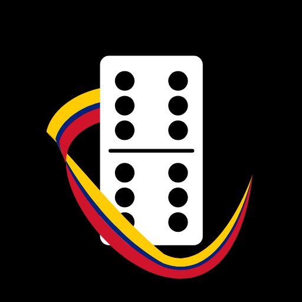
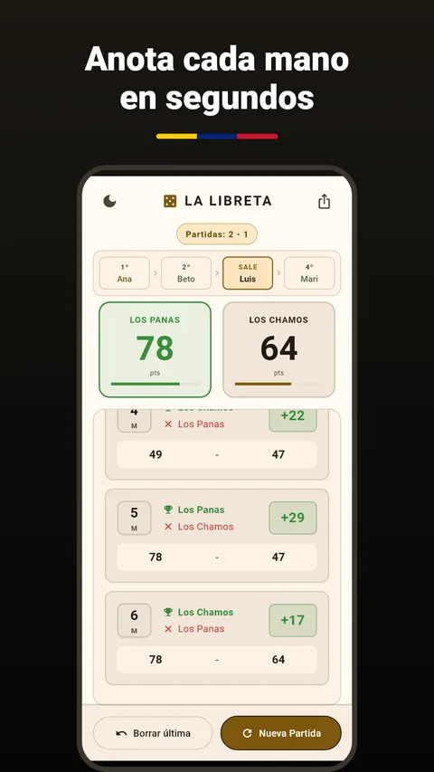
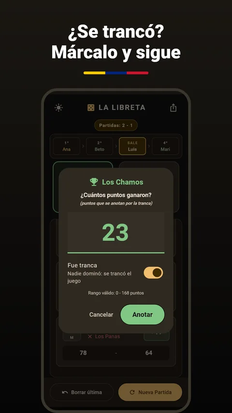
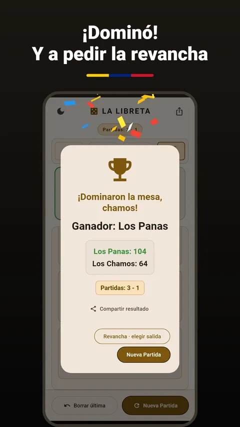

Domino Venezolano
La libreta digital del dominó criollo
Adiós lápiz, adiós servilleta. Anota cada mano, la app lleva la cuenta hasta 100, recuerda quién sale y guarda el marcador de revanchas. Gratis, sin cuentas y sin anuncios.
Abre esta página en tu teléfono para instalar la app: correiacristofer.github.io/domino-venezolano



Instalar en Android
- Toca Descargar para Android. Si el navegador avisa de que el archivo puede ser dañino, toca Descargar de todas formas: lo dice con cualquier app que no venga de Play Store.
- Cuando termine, toca Abrir. Si no lo ves, busca domino-venezolano.apk en la app Archivos, dentro de Descargas.
- Si aparece que tu teléfono no puede instalar apps desconocidas de esta fuente, toca Ajustes, activa Permitir de esta fuente y vuelve atrás.
- Toca Instalar. Si Play Protect dice que no reconoce la app, toca Más detalles y luego Instalar de todas formas. En Xiaomi puede salir antes un análisis de seguridad: espera a que termine y toca Instalar.
Para actualizar, descarga la nueva versión desde esta página e instálala encima, sin desinstalar la anterior: así tus partidas se mantienen. Si desinstalas la app, las partidas se borran.
Usar en iPhone
- Toca Usar en iPhone. Si la página se abrió dentro de WhatsApp, Instagram u otra app, ábrela antes en Safari (botón de la brújula o «Abrir en Safari»).
- Cuando veas la libreta, toca Compartir: el cuadrado con una flecha hacia arriba. En iOS 26 está dentro del botón ···.
- Elige Añadir a pantalla de inicio (desliza hacia abajo si no aparece) y toca Añadir.
- Desde ahora ábrela con su icono, como cualquier app.
La versión web necesita conexión para abrirse. Las partidas se guardan en tu iPhone. Úsala desde el icono: si solo la abres en una pestaña de Safari, Safari puede borrar sus datos tras unos días sin usarla, y también se borran si eliminas los datos de sitios web en los ajustes de Safari.
Preguntas frecuentes
¿Es segura? ¿Qué permisos pide?
No pide ningún permiso: ni Internet, ni contactos, ni fotos, ni ubicación.
Los avisos al instalar salen porque no viene de Play Store. El código es
público.
Me sale «App no instalada».
Si tenías una versión descargada antes de noviembre de 2026, desinstálala
primero: estaba firmada de otra forma y Android no deja instalar encima. Si
no es tu caso, comprueba que tienes espacio libre y Android 7 o superior.
¿Cómo anoto una mano?
Toca el panel del equipo que ganó la mano y escribe los puntos.
¿Y si fue tranca?
Al anotar, activa «Fue tranca». La mano queda marcada en la libreta.
Me equivoqué al anotar.
Usa «Borrar última». La app te pide confirmación antes de borrarla.
¿Se pierde la partida si cierro la app?
No. La partida y el marcador de revanchas se guardan en tu teléfono.
¿Cuántos puntos acepta por mano?
De 0 a 168, que es la suma de todas las fichas de un dominó doble seis.
Contacto
¿Encontraste un error o tienes una idea? Puedes abrir un aviso en GitHub.